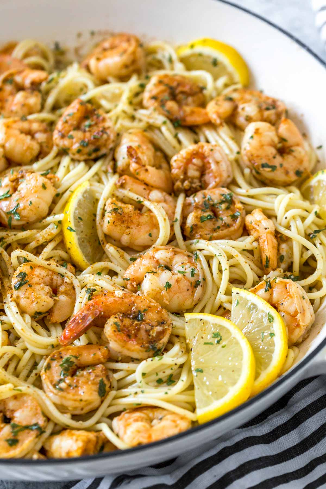

Shrimp Scampi Pasta

The Dish!
This recipe needed modification from the original because there
was simply too much Old Bay.
We recommend no more than 2tbsp of Old Bay per pound of shrimp.
Ingredients
- 12-ounces pasta, spaghetti or linguine
- 1 pound raw shrimp, peeled and deveined
- 2 tablespoons Old Bay seasoning
- 1/4 cup olive oil
- 3 garlic cloves, minced (about 1 tablespoon minced)
- 1 lemon, juiced (about 2 tablespoons)
- 2 tablespoons chopped parsley
- 1/2 cup dry white wine
Steps
- Cook pasta according to package directions for al dente. Reserve about 1/4 cup pasta water before draining.
- In a bowl, toss shrimp with Old Bay seasoning until evenly coated.
- Heat olive oil in a large skillet over medium high heat.
- Working in batches, sauté shrimp until no longer pink. Remove from pan and set aside.
- Reduce heat to medium. Add garlic and parsley to the pan and cook until fragrant, about 30 seconds.
- Deglaze the pan with white wine and lemon juice.
- Return shrimp to the pan. Reduce heat to low and allow them to simmer in the sauce mixture for a few minutes.
- Add the cooked pasta and reserved water to the pan. Toss with the shrimp and sauce mixture until evenly combined.